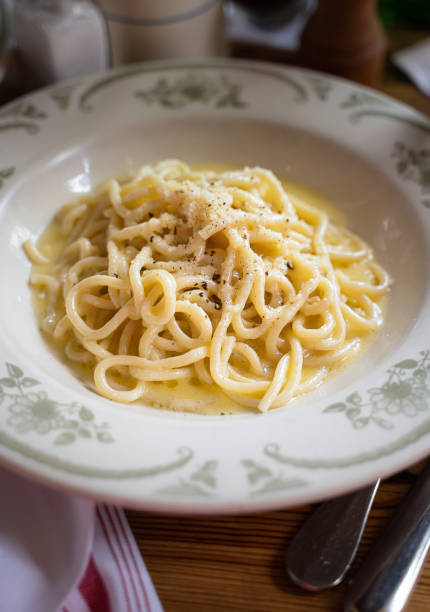

Cacio E Pepe
Home

Description
Cacio E Pepe is an Italian dish meaning "cheese and pepper."
Ingredients
- 1 1/2 cups finely grated Pecorino Romano
- 1 cup finely grated Parmigiano-Reggiano
- 1 TBSP ground black pepper
- 3/4 pound tonnarelli or other long pasta like linguine or spaghetti
- Olive Oil
Steps
- Put a pot of salted water on to boil. In a large bowl, combine the cheeses and black pepper; mash with just enough cold water to make a thick paste. Spread the paste evenly in the bowl.
- Once the water is boiling, add the pasta. The second before it is perfectly cooked (taste it frequently once it begins to soften), reserve a cup or so of the cooking water, then use tongs to quickly transfer the pasta to the bowl. Stir vigorously to coat the pasta, adding a teaspoon or two of olive oil and a bit of the pasta cooking water to thin the sauce if necessary. The sauce should cling to the pasta and be creamy but not watery.
- Plate and dust each dish with additional pecorino and pepper. Serve immediately.
Source